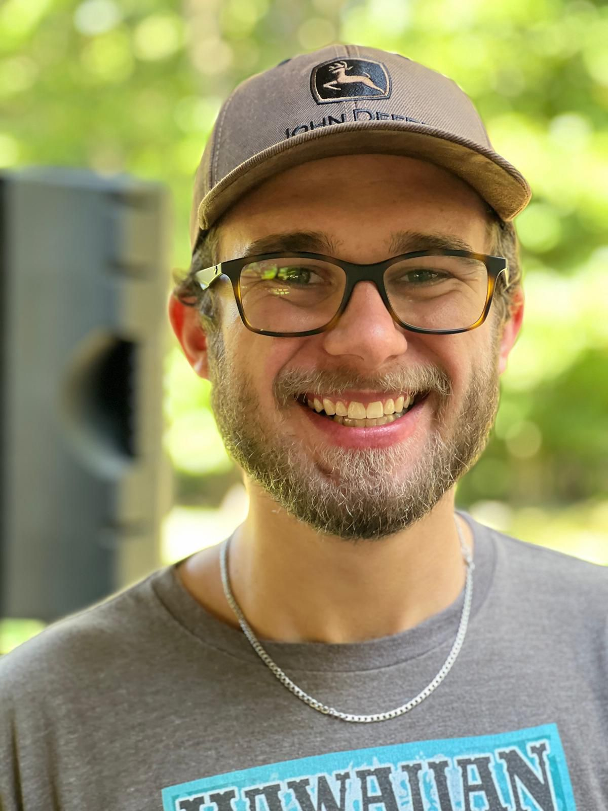

Senior Aerospace Engineering student at The University of Alabama
I’m Fourie van Rooyen, a senior Aerospace Engineering student at The University of Alabama, driven by a love for aircraft, rockets, and everything beyond Earth’s atmosphere.
Through hands‑on work with Alabama Aerodynamics Experimental Research Operations and Alabama Rocketry Association, I’ve designed and tested propellers, supported liquid rocket engine hot fires, and built flight dynamics simulations in Python and MATLAB.
I thrive where engineering meets experimentation — turning bold ideas into real, testable systems. When I’m not building something or working, I’m usually out hiking, or playing pickleball with friends.